Analysis reports are designed to be printed “in context” starting from a selection of records in a source file (Products or Jobs, for example). When you print an analysis report the source file is always used to establish which records you require for analysis. There are three ways in which records are selected from the source file, the method for selection being specified when the analysis report is created.
Use Selected Records: Analyse the highlighted records in the source file.
Use Preset Search Use an embedded search function in the report to locate the records in the source file to analyse.
Ask for Search Code Use an embedded search function to locate the records in the source file, but prompt the user for the value to search for.
Both the source file and the number of records in it that are being analysed are shown in the Analysis Settings window which is displayed after you start the analysis. You should always check these before continuing with an analysis.
To print from an existing analysis setup:
The list of records in the file will be displayed.
You can do this by using the Find command or highlighting the records by holding down the control/command key and clicking on the items you want to select.
The analysis settings dialog box will be displayed.
Go to step 4 below
The analysis settings dialog box will be displayed.
The number of records in the source file that match the preset search criterion is displayed in the top portion of the window.
Go to step 4 below
The Analysis Criterion window will be displayed.
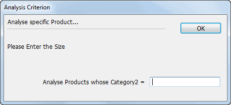
The Analysis Settings window will open. MoneyWorks will find all records in the source file that match the code you entered, and the number of records found will be displayed in the top left of the window.
The information that you enter depends on how the search was specified. In the example above, we should enter a debtor code. Note that you can use the wildcard characters “@” and “?”—for information on these see Account Code Patterns.
The Analysis Criterion settings window will be displayed again.
These options are discussed in the next section. For page and output options see Output Settings
Click the Print, Preview, Save As, or email button as appropriate to print the Analysis report
The Analysis report will be prepared and either printed, previewed or exported, depending upon the Output options settings.
The Analysis Settings window is displayed whenever an analysis report is printed. There are two forms of settings of the settings window, one of which is simpler than the other. The settings window that was last used will be used next time the analysis is printed—to change to the more complex settings window,
click More Options.
The simple settings (as displayed above) allow you to specify the time options for printing the report. Only those transactions that fall in the indicated date range will be used in the report.
The Use Selection option is only available when the source file is the same as the base file (i.e. is Transactions). In this case the time range is determined by the selection itself.
The Specify button only appears in reports which are created using the Ask for Search Code option, and is used to specify the search pattern.
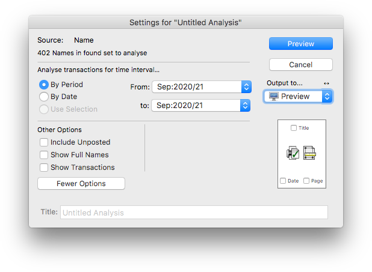
The second form of the Analysis Settings provides additional options.
In this window you can specify either period or date ranges. Only transactions that fall in the indicated time range will be included.
Include Unposted Unposted as well as posted transactions will be included in the analysis. Normally only posted transactions are analysed.
Show Full Names When set, both the code and descriptions are shown on the report (making the report wider). By default, only codes are shown
Show Transactions The individual transactions that make up each analysis line will be listed under that line.
Clicking Fewer Options changes to the simpler settings window. Note that the options set in the more complex window will still apply—they are merely hidden in the simple window.
The Analysis Settings options for Job Sheet based analysis reports operate in a similar manner to those for transactions.
The simple settings allows you to specify which job sheet records you want to include in the report.
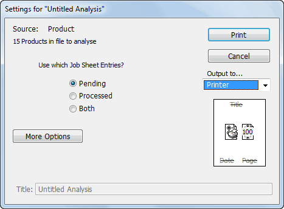
Only pending (i.e. unbilled) job sheet items will be used.
Only processed (i.e. invoiced) job sheet items will be used.
Both pending and processed job sheet items will be used. To change to the more complex form, click More Options.
The second form of the Analysis Settings provides more options and allows you to specify time ranges. These operate in the same manner as in the settings box for the transaction analyses. Clicking Fewer Options changes to the simple settings window.
An analysis report will produce what is basically a cross tabulation (or cross tab) of selected transaction or job sheet information. Cross tabs are commonly used to collate data for decision making purposes.
When you create an analysis report you specify which is the source file. When the analysis is done every transaction detail record (or job sheet item) in the nominated time interval that uses one of the selected source records is located. The summary information (e.g. count, quantity, net) from the detail or job sheet records is calculated and summarised.
In the following we are doing a Product by Customer analysis, i.e. who has purchased the specified products:
The source file is determined by what information is required. Here we require sales information by product, so the source file is Products. Three products have been highlighted to analyse.
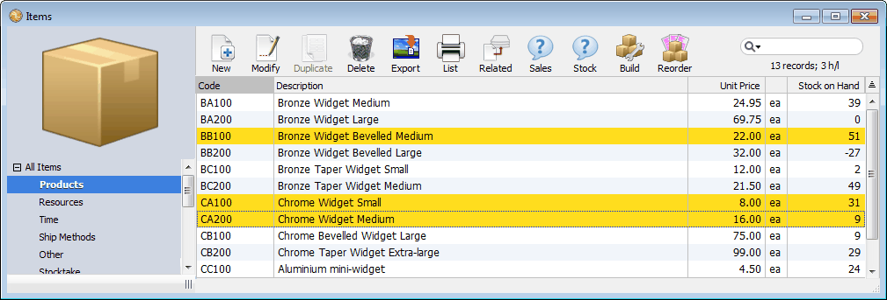
Choosing New Analysis from the New hierarchical menu in the File menu displays the New Analysis window in which the source and base files are selected. Here we want the source file to be Item/Product, as this is our starting point.
Clicking New displays the analysis definition window in which the details of the analysis are specified. The following schematic shows how this works.
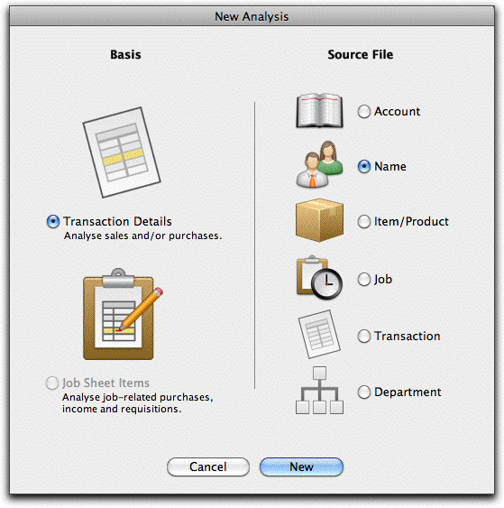
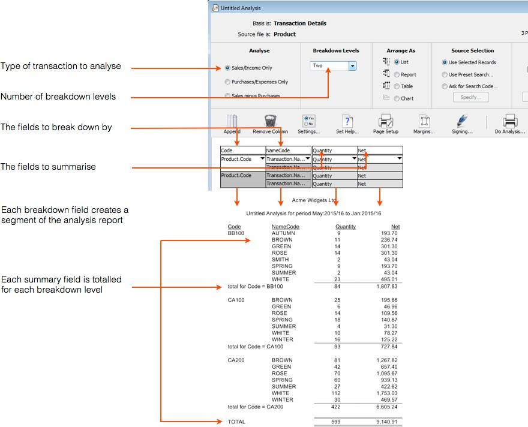
Creating a New AnalysisYou can define your own analysis reports and use them just once or save them as a template for repeated use in the future. Each analysis is based on a source file, which you specify when you create the analysis. You also need to indicate the basis for the analysis, which can be either transaction detail lines or job sheet items. To create an analysis report:
The New Analysis window will be displayed.
This file determines where the records that are analysed are found.
You will choose Transaction Details if you are preparing an analysis that is based on the information in the transaction file (for example, if you want anything to do with sales).
You will choose Job Sheet Items if you are preparing an analysis based on the items that have been entered in the Job Sheet Item file (for example, who has worked on what project, what resources were used in a specific project).
The Source File determines how you specify what can be analysed. For example, if you want to analyse sales by customer, the source file will be Name. If you want to analyse sales for a particular range of products, the source file will be Product.
The Analysis Definition window is displayed.
For further information on these options see Analysis Definition Options.
See Changing the Number of Label Columns for information on this.
For information on this see Setting the Help Text.
Click Do Analysis... to start preparing the Analysis report
The Analysis Settings window will be displayed. See Printing An Existing Analysis Report for details of this.
You will be asked if you want to save the analysis.
The standard file creation dialog box will be displayed. You need to enter the report name in here, and also ensure that it is saved in the MoneyWorks Reports folder (or a folder contained within this folder) so that it will appear in the Reports menu.
You may like to devise some name coding scheme for the names of the analysis so that you can readily identify what the source file is for each. For example analyses starting with P could refer to the Product file, J to the Job file and so forth.
You can modify existing analysis definitions, in much the same way that you can modify report templates.
The standard file open dialog box will be displayed, listing the analysis and report definitions (which are stored in the MoneyWorks Reports folder).
The Analysis Definition window will open for the analysis.
If a report definition opens instead of an analysis, you have chosen a report instead of an analysis file. Close the report by clicking in the close box at the top left of the window, and repeat from step 1.
Make any changes that are required
Reset the Page Setup and margins if required
Choose File>Save Analysis to save the new definition
If you don’t want to save the changes, close the window by clicking in the close box at the top left of the window, and click the No button when asked if you want to save the changes.
If you want to keep the original analysis definition as well as the one you have changed, choose Save Analysis As from the File menu instead of Save Analysis. You will be prompted for a file name, and the changes will be saved into a file of that name.
In the Analysis definition window, you can define the information that you want to appear in the Analysis. The window is laid out in much the same way as the analysis will appear when printed, and defaults to a single label column and 2 columns of data.
Analysis reports consist of a set of columns across the page. There are two types of columns, label columns and data columns. The label columns always contain information indicating what is in the data columns (for example, a product or debtor code); the data column contains a calculated value (the net amount or the number of occurrences for example). The first column will usually be a label and will probably contain information from the source file (the job code for example). Depending upon the level of breakdown, there may be up to two additional label columns, drawn from either the source file or another file.
You cannot change the fonts, the column width or the formatting of numbers in an analysis report. However you can export the report and import it into either a spreadsheet or word-processor for subsequent reformatting.
The options in the window are:
Analyse: Determines the type of transaction or job sheet item records that will be included in the analysis.
For transaction based analyses these are:
Sales/Income Only: Only cash sales and debtor invoice transactions will be included in the analysis.
Purchases/Expenses Only: Only cash purchases and creditor invoices will be included in the analysis.
Sales minus Purchases: All sales and purchases will be included in the analysis. Transactions representing purchases will be represented as negative values, whilst those corresponding to sales will be represented as positive.
For Job Sheet Item analyses these are:
Incomings: Only job sheet lines created as a result of a debtor invoice or a cash sale will be included in the analysis.
Outgoings: Only job sheet items directly entered into the job sheet item file
or created as a result of an expense will be included.
In - Out: All job sheet items will be included. Those representing incomings will be treated as positive, and those representing outgoings will be treated as negative (but will not be printed as such). The net result will represent a surplus or deficit for the analysed fields.
Breakdown Levels: This is the number of levels that the analysis will be printed for, and can range from none (total only) to three. There will be a label column for each level of breakdown.
Arrange As: This determines how the report is laid out.
List: The report is presented down the page. Totals are given after each change in the Label columns.
Report: Similar to the list format, but a separate heading is given for each change in the left hand most Label column.
Two additional options are available for this format. If No Grand Total is selected the printing of the grand total at the end of the report is suppressed. If Page Breaks is selected, a new page is started whenever the left most field value alters.
Table: The right most label in the analysis definition window is printed horizontally across the page, and the remaining labels are printed vertically as for a list. Only one numeric value can be analysed in this format.
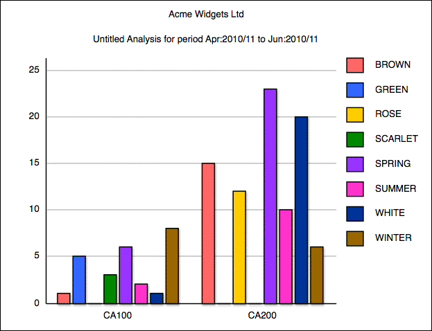
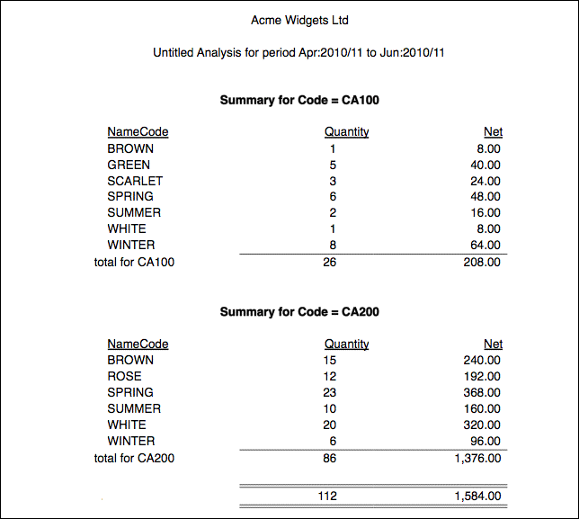
Chart: Similar to table, but the information is presented as a chart. By default this will be a column chart as shown, but you can select a different chart type by clicking the chart icon and selecting from the pop-up menu. You can also append the curve-type meta-characters (|S |L |C |Mn |P) — (see Chart) to the column heading to get a different form of graph. For example a heading of “Quantity|P” will produce a pie chart, whereas “Quantity|L” produces a line graph.
The Source Selection options determine how the source file records are selected.
Use Selected Records: If this is set, the user must identify the records in the source file to be analysed before the analysis report is printed. The records are selected by highlighting them in the source file list. If the source file list window is not open, all records in the file will be analysed. If the source file list window is open but no records are highlighted, all the records currently displayed in the list the found set will be analysed.
Use Preset Search: Selecting this option causes the standard Find window to be displayed see Find by Field. You set the search criteria in this, and this criteria is saved with the report. Whenever the report is printed, a search of the source file is undertaken using the criteria, and those records found will be analysed.
The preset search may be altered by clicking the Specify button. If the option key is held down and the Specify button is clicked the complex search window is displayed see Find by Formula.
Ask for Search Code: Causes the Setup Search window to be displayed.
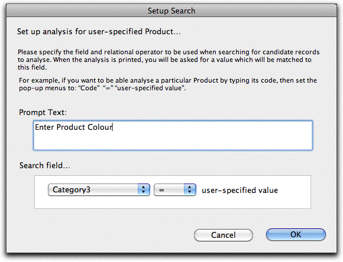
This allows you to specify some prompt text, and the basis of the search criteria. When the report is run, a window is displayed with the prompt text and a field into which the user can enter a pattern to complete the search criterion.
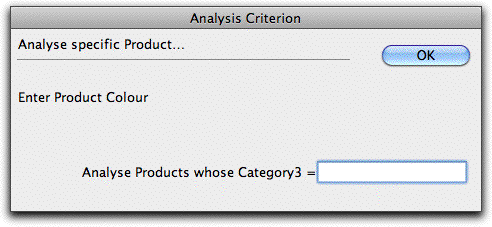
The source file is then searched for the matching records.
The optional filter function will filter the candidate detail or job sheet records based on the search expression. Only those records that match the source selection and the filter will be included in the analysis. When you select the filter option, the Advanced Find window is displayed for you to enter the search expression for the filter. If a relational search is used, it must terminate with [detail] or [Jobsheet].
The information that will be appear in the analysis is determined by the settings in each of the columns in the analysis report.
To change the settings for a column, hold the mouse down on the pop-up menu immediately below the column heading, and select the item required.
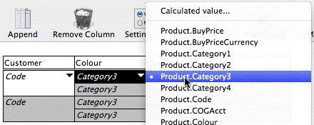
For Label columns, the pop-up menu will contain a list of field names from a variety of files. Select the field name that you wish to use (for further information on these fields see Appendix A—Field Descriptions). All records in the base file will be grouped by this field, and each occurrence of it in the base file will appear as a line in the report.
Calculated Value: Choosing Calculated Value (at the top of the menu) allows you to specify your own calculated breakdown in the Calculation window that opens. Calculations must be correctly formed expressions — see Calculations and things — pertaining to the basis and source files. The following expression for example will do a sales analysis by day of week:
DayOfWeek (lookup(Detail.ParentSeq, "Transaction. transdate"))
The pop-up menu for value columns contains a list of values that can appear in the report. These values will be aggregated for each combination of the label columns, as shown in the following table.
Base File Value Description
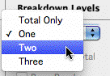
An analysis report can have between zero and three label columns (levels of breakdown). Zero columns corresponds to printing only totals.To change the number of label columns use the Breakdown Levels pop-up menu.
Transaction Details
Job Sheet Item
Count The count of the number of detail lines. Quantity The sum of the product quantity field.
Net The sum of the values in the Net field, or (for a product transaction), the Extension field.
GST/VAT/tax The sum of the values in the tax field.
Gross The sum of the values in the Gross field, or (for a product transaction), the extended price including GST/VAT/Tax (this does not show on the transaction entry screen).
UnitPrice The average of the unit selling price field for product transactions (this will be zero in service transactions).
CostPrice The average of the unit cost price for product selling transactions, representing the average unit cost of goods. For buying transactions, it has the same value as the unitprice, so that margin calculations will be correct, and for service transactions it is zero.
ExtCostPrice The sum of the unit cost price multiplied by the quantity for product selling transactions. This represents the total cost of goods for the detail line.
$ Margin The difference between the Net and the ExtCostPrice.
$Discount The sum of the total discount for the detail line.
% Margin $Margin/Net displayed as a percentage.
Count The count of the number of job sheet item records. Quantity The sum of the quantity field.
Cost The sum of the cost field.
Value The sum of the value field.
$ Margin The sum of the value field minus the sum of the cost field.
% Margin The $ margin divided by the sum of the value field. Budget The sum of the budget (cost) field.
Use the Append and Remove Column toolbar buttons to change the number of value columns in the report. A report can have between one and ten value columns—a table can have many more.
By default the Auto Scale option (set in the Margins window) is on for analysis reports. This will scale the report to fit, regardless of the number of columns. To keep very wide reports legible, you should set the page orientation to landscape.
Each column in the report is assigned a heading.
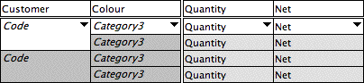
To change a column heading, click on the existing heading and type in a new
Budget Variance
Budget Variance
Budget - Cost.
Budget Variance divided by budget shown as a percentage.
one. Although headings can be up to 31 characters long, they will be truncated if they are too long to fit on the printed report.
The Report Preferences allow you to customise the presentation of transaction (or jobsheet) lines in your report, and also protect it from unauthorised use without signing. To access the preferences:
1. Click the Settings button
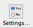
The report preferences window will open.
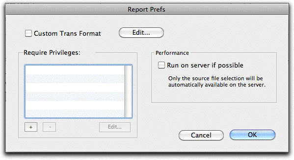
The Settings buttonTurn on the Custom Trans Format option
A small custom report will open that prints the line. Customise this as required (see Custom Trans Format).
You can edit an existing custom format by clicking the Edit button.
Click the “+” button at the bottom of the Require Privileges list
For example, a user might need to have the Sales Enquiry privilege to access a report of sales by customer. If you add more than one privilege, a user must have all those privileges.Note that users who do not have the Signing and Using Unsigned Forms and Reports privilege will still need to have the
report explicitly signed to them.
Analysis reports that are run over a network can be slow, so in general it is better to run them on the Datacentre server. To do this:
Turn on the Run on server if possible option
The report will be uploaded to the server for running, along with the selection it is based on. Note that reports that have the Ask for Search Code option on cannot run on the server.
The help text is displayed whenever the report is selected in the Index to Reports. If you are going to save the report for later use, it is good idea to include a brief description of the report and any requirements it may have.
To set the help text click the Set Help... button. For further details see Setting the Help Text.
1 The transaction file itself can be the source file. In this case the analysis will be done on all highlighted transactions or, if there are none in the found set or if the transaction window is not open, all transactions.↩︎